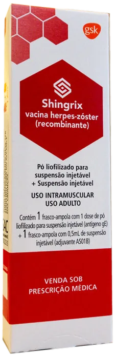

A vacina recombinante previne o herpes zóster (cobreiro) e a dor que pode durar meses depois dele. Ela não está disponível nos postos de saúde para essa faixa etária.
Shingrix (GSK)
O herpes zóster é causado pelo mesmo vírus da catapora. Ele fica guardado no corpo e pode voltar anos depois, principalmente quando a imunidade cai com a idade. Causa bolhas dolorosas em faixa na pele, e a dor pode continuar por meses. Nos estudos clínicos, a vacina recombinante reduziu em mais de 90% o risco de herpes zóster em adultos com 50 anos ou mais. É indicada também para quem já teve a doença.
Recomendação de rotina da SBIm para todos a partir dos 50 anos.
Adultos com imunidade baixa por doença ou tratamento, com indicação médica.
Quem já teve herpes zóster pode vacinar, com avaliação individual.
Quem tomou a vacina atenuada antiga pode completar a proteção com a recombinante.
A 2ª dose pode ser feita de 2 a 6 meses depois da 1ª. Para quem tem imunidade baixa, pode ser de 1 a 2 meses depois. Se atrasar, não precisa recomeçar.
Gostaria de parabenizar toda a equipe pelo atendimento excelente! Acolhimento carinhoso e com muita atenção.
DDiuene L. Avaliação 5 estrelas no Google
Excelente atendimento! A equipe é muito bem preparada e o espaço, além de acolhedor, possui um ambiente lúdico…
JJoana A. Avaliação 5 estrelas no Google
Serviço excelente, atendem em domicílio e nem por isso o serviço muda a qualidade.
★Paciente VMais Avaliação 5 estrelas no Google
Desde dos 2 meses vacinando minha filha nessa clínica, todos os profissionais sempre foram maravilhosos…
NNadja M. Avaliação 5 estrelas no Google
Excelente experiência. Aplicação da vacina na Clínica Vmais unidade Fátima.
★Paciente VMais Avaliação 5 estrelas no Google
Não para a população em geral a partir dos 50 anos. Ela está disponível nas clínicas privadas, como a VMais.
Pode. A doença pode voltar, e a SBIm recomenda a vacina mesmo para quem já teve. A bula pede avaliação individual, porque os dados nesse grupo ainda são limitados. A equipe orienta quanto tempo esperar depois do quadro.
Os estudos acompanharam vacinados por cerca de 11 anos, e no 11º ano a eficácia ainda era de 82% em quem tinha 50 anos ou mais. A necessidade de reforço não foi estabelecida.
Sim, no cartão. Fale com a equipe pelo WhatsApp para ver as condições.
Fontes: Bula de Shingrix aprovada pela Anvisa e calendários SBIm do adulto e do idoso. Página revisada em outubro de 2026.
Conteúdo informativo. A indicação de cada vacina é confirmada pela nossa equipe no atendimento ou pelo seu médico.
Fale com a nossa enfermagem pelo WhatsApp. A equipe confirma a indicação, os valores e o melhor horário, na clínica ou na sua casa.